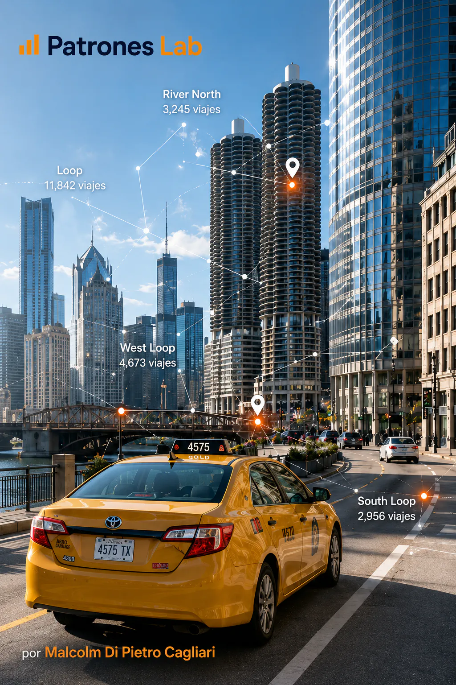

DATENANALYSE · PROJEKT 03

Projekt 12 · Georäumliche Analyse
Georäumliche Analyse von Taxifahrten
Analyse von Taxifahrten in Chicago mit Fokus auf geografische Lage, Bewegungen zwischen Punkten, dominante Gebiete und Routen.
KONTEXT UND ZIEL
Verstehen, wie sich gemeldete Taxifahrten räumlich verteilen und welche Gebiete die stärkste urbane Bewegung konzentrieren.
DATEN UND DIAGNOSE
- Community Areas und Koordinaten dienen als Achsen der räumlichen Analyse.
- Variablen und Visualisierungen werden erstellt, um Startgebiete, Zielgebiete und Hauptströme zu beobachten.
- Eine georäumliche Betrachtung ergänzt die operative Sicht des Projekts Chicago Taxi Trips.
ERGEBNIS UND LERNGEWINN
Das Ergebnis überführt die Fahrten in eine räumliche Betrachtung und ermöglicht, Nachfrage, Konzentration und Mobilität aus territorialer Perspektive zu interpretieren.